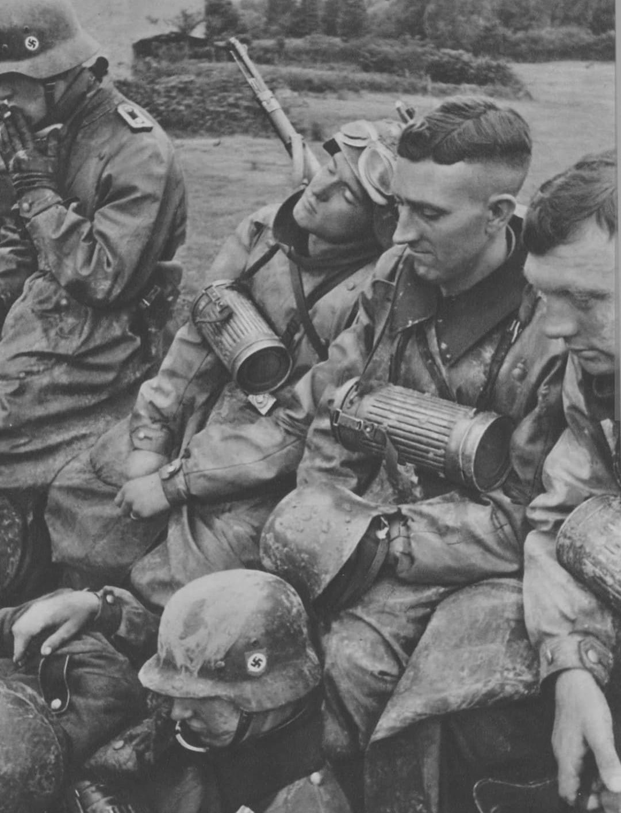
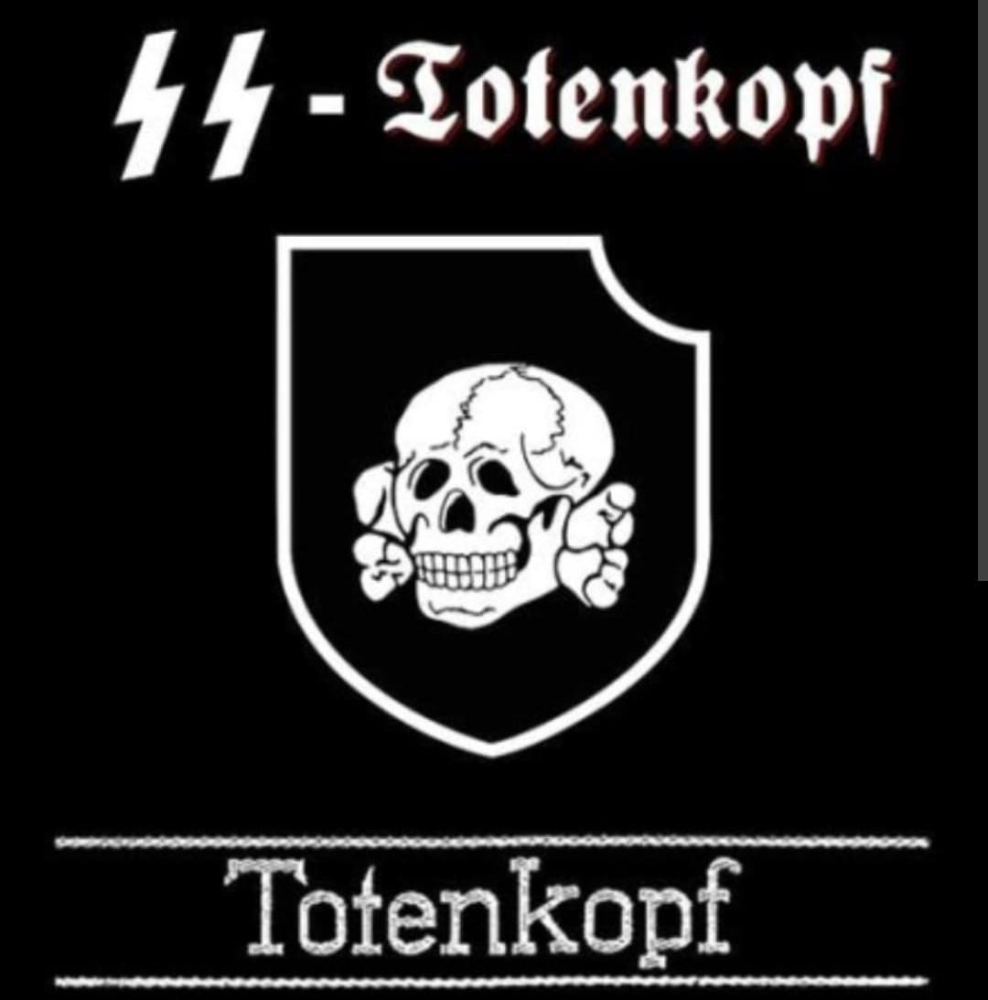
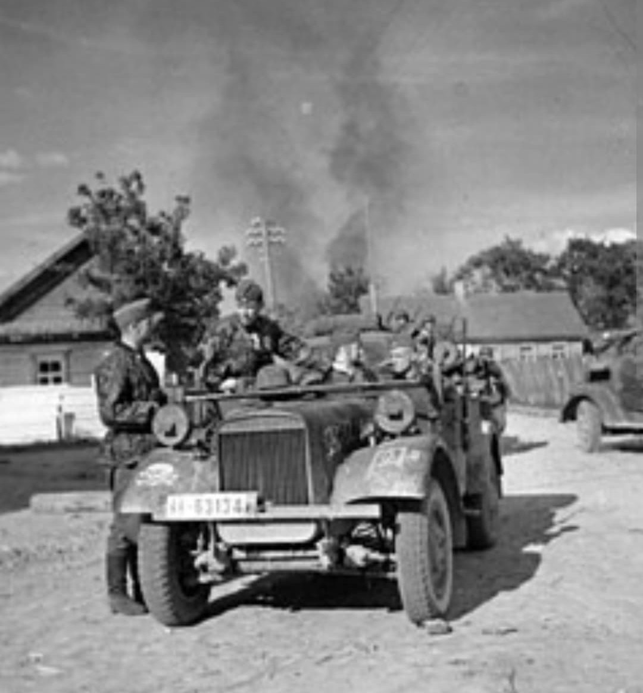

Des gardiens des camps de concentration au fanatisme militaire de la Waffen-SS

Formée en octobre 1939 au camp de concentration de Dachau sous le commandement du SS-Obergruppenführer Theodor Eicke, la 3. SS-Panzer-Division « Totenkopf » présente l'une des origines les plus sombres de la Waffen-SS.
Construite en regroupant les gardiens des camps de concentration (les *SS-Totenkopfverbände*), elle s'est caractérisée tout au long du conflit par un fanatisme idéologique extrême, une férocité tactique remarquable et une répétition systématique de crimes de guerre.
L'unité a été façonnée par Theodor Eicke dans un culte absolu de l'obéissance, de la brutalité et du mépris de la vie humaine.
Son insigne officiel reprend la **tête de mort sur tibias croisés** (*Totenkopf*), un symbole militaire d'origine prussienne détourné par la SS pour devenir le symbole du système concentrationnaire nazi et l'emblème de la division.

Engagée lors de la campagne de France en mai 1940, la division subit de lourdes pertes face à la contre-attaque britannique à Arras.
C'est au cours de cette campagne que l'unité commet l'un de ses premiers crimes majeurs : le **27 mai 1940**, au lieu-dit *Le Paradis* (Nord-Pas-de-Calais), les hommes du capitaine Fritz Knöchlein fusillent à la mitrailleuse 97 prisonniers de guerre britanniques du *Royal Norfolk Regiment* ayant déposé les armes.

Participant à l'**Opération Barbarossa** dès juin 1941 dans le secteur Nord (pays baltes, Léningrad), la division subit des pertes effroyables lors de l'encerclement de la **poche de Demyansk** durant l'hiver 1941-1942, où elle perd plus de la moitié de ses effectifs.
Reconstruite en division blindée (*SS-Panzergrenadier-Division* puis *SS-Panzer-Division*), elle joue un rôle central dans la troisième bataille de Kharkov (où Eicke est tué) et lors de la **bataille de Koursk** en juillet 1943. Elle passe le reste de la guerre dans des combats défensifs acharnés en Pologne, en Hongrie puis en Autriche, avant de se rendre aux forces américaines en mai 1945, qui la remettent à l'Armée Rouge.
La division « Totenkopf » incarne le lien direct et permanent entre l'appareil concentrationnaire du Reich et l'armée de première ligne.
Déclarée **organisation criminelle** lors du procès de Nuremberg en 1946 au même titre que l'ensemble de la Waffen-SS, ses officiers responsables de massacres (dont Fritz Knöchlein) ont été jugés et exécutés pour crimes de guerre après le conflit.
Page du Musée HOP WW2 – Section Unités & Divisions Célèbres